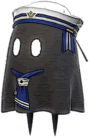
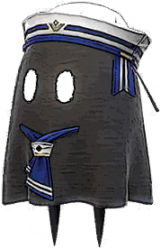
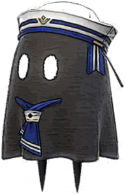
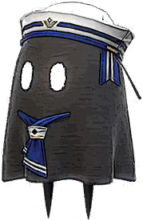

For EX Stories, they will not autoplay but still loop like the main story to prevent spoilers.
The video at the top is in English for narration and the video at the bottom is in Japanese. Both use different channel uploaders just in case something happens to the other channel.
If you would like to instead read a summary of the memory, you can below.
When he enlisted in the Military
A perfectly ordered military procession marches forth, boots pounding in synch on the hardscrabble ground. Troops kick up dirt in the training range as they run through an endless series of drills.
If a person joins the military, they are essentially offering up their life to a country. For when the time comes, they will be thrown into battle without hesitation or mercy. Yet in this poor country, there is no end to the number of candidates eagerly waiting to enlist. This is because the monetary bonus for joining is substantial. Thousands upon thousands apply to join every year, each one drawn by the well-known catchphrase: "Join in a day, eat for a lifetime!" But with so many applicants, the army can afford to be picky — and most would-be recruits end up washing out. Those who are successful are assigned to one of several squads, where they serve under a captain, as well as senior squadmates who function as instructors. Squads eat together, sleep together, and train together. The idea is to teach discipline through group activities.
This is a small base stationed at the border of the country. The new recruits stand in a row in the briefing room. At the front of the room, the captain calls the name of a recruit who achieved top scores in the military exam. In response, a young man steps forward and snaps off a dignified salute. The captain expresses his high hopes for the young recruit, who barks out a loud "Sir, yes, sir!" in reply. Everyone present can feel the ambition burning inside him.
A few nights later, loud voices ring out in the dorm. The young man has started an argument with a fellow squad member. The two had been in competition with each other since the day they arrived, and often butted heads. Yet while the young man had a reputation for arrogance and was generally avoided by his fellow soldiers, he managed to form a sort of relationship with the other man despite their rivalry. He was his friend — perhaps his only friend. As their argument heats up, the other soldiers gather around and egg them on, clearly enjoying the show.
"You're always so goddamn selfish!" cries the friend.
He is angry — almost quaking with rage — yet the young man is equally furious.
"Yeah, well, I actually have things I want to ACHIEVE!"
The argument quickly turns violent, forcing the other soldiers to intervene — but they have trouble pulling the two apart. The fight ends as suddenly as it began when a door opens. The moment the squad catches sight of their captain, they grow silent and fall in at perfect attention. The captain just mutters and shakes his head at the pair before ordering them to clean the storage room as punishment. The senior who was responsible for instructing the pair is also ordered to pitch in, and his irritation is clear.
When they reach the storage room, they find it in a state of extreme disarray.
"Can't believe the damn captain is making me do this," grumbles the young man.
"I mean, this is grunt work! What's even the point!?"
"Move your hands, not your mouth," responds the instructor.
"Accepting punishment is part of being a soldier."
The silence of his fellow squadmates as they clean only spurs the young man's irritation further.
"This is stupid. I have things I have to accomplish. I need to fight! I need to win a medal of honor!"
A medal of honor. It is the highest honor awarded by their country, given only to soldiers who accomplish greatness. Those who receive it are said to be destined for success.
"I'm going to be the best," continues the young man, "and everyone else is going to know it!"
Though many members of the army enlist for the cash bonus, the young man joined only to fulfill the ambition in his heart. But this is the first time he's ever told his squadmates about his true goals. He has skill to spare in the military arts, so it's clearly not some flash-in-the-pan ideal. The relief he feels at finally expressing it is palpable.
His speech made, the young man makes to leave the storage room. When his friend reminds him their work has only begun, he keeps walking and says: "My part's done. I'm going to sleep."
Ambitious goals cannot be achieved alone. It takes the work of those who walk beside us. This is clearly a lesson the young man has yet to learn. The remaining two soldiers in the storage room smile wryly at each other, each of them silently mulling over this very thought.
Several days later...
The squad is called together for a strategy meeting. As they gather in the briefing room, tension fills the air. The silence is perfect. But after ten long minutes, the briefing has yet to begin. It seems the captain has slept in. Again. This realization spurs the young man's frustration anew.
Finally, the captain arrives in a disheveled state.
"Sorry about that," he says to muted laughter.
"Guess I missed the alarm again."
This said, he turns serious, as does the rest of the room.
"Here's the latest: We've detected enemy forces marching en masse toward the border."
Any remaining smiles in the room vanish at this news. The captain begins explaining their mission.
"We are to stop the enemy's advance and protect our nation's territory. And as luck would have it, this base is directly in their path."
"Our only objective is to protect this base. We just need the enemy to withdraw while keeping our losses to a minimum."
The briefing room fills with murmurs at this news. Reactions run the gamut from enthusiasm to relief to unease. But the young man leaps to his feet and asks permission to speak. Stifling a tired yawn, the captain tells him to continue. The sneer on the young man's face is clear to all. After some initial comments on the state of the enemy, he voices disagreement with the plan, and suggests a total annihilation of their forces instead. A nervous buzz ripples through the room. But the young man ignores it and continues pressing his case.
"These people have threatened our borders for far too long! If we take out one of their squadrons, we'll be heroes! People will have to — "
"That's enough, soldier," says the captain softly. "Remember what I said? The most important part of this plan is defending the base and keeping casualties to a bare minimum. Because if any of the men here die, that falls on me."
Rather than backing down, the young man redoubles his efforts and engages in verbal sparring with the captain for some time.
In the end, however, he is overruled and the briefing ends. His plan rejected, the young man is infuriated.
"Why the hell doesn't he get it!? I'm thinking of this squad far more than he is!"
Still convinced his plan is correct, he makes the rounds of his fellow soldiers, looking for any who might agree with him. With the arrogant attitude he has always displayed to his fellows, he does not find many who will side with him. Even the man he thinks of as his best friend turns him down. It's not that he doesn't desire glory; everyone in the squad wants nothing more than to wear a medal of honor. But he joined the military to keep his head down, follow orders, and send money home to his family. So he can't risk everything on his friend's reckless plan.
Were these reasons true? Perhaps. Or perhaps he is simply irritated the young man is crafting alternative plans on his own without even consulting anyone. The young man realizes his friend has balled his hand into a fist. With the thoughts and emotions of the pair still at odds, the day of the operation grows ever closer...
The battlefield is silent; it's almost impossible to believe a war ever raged here. All the young man can hear is his own ragged breath. He stands in the borders of the base; scattered before him are countless numbers of corpses. There is no doubt who they are.
Four hours earlier...
The enemy arrives at the base, and the battle begins. The squad digs in and defends the base from the enemy, just as the captain ordered. But the young man, impatient with this war of attrition, decides to commence with his own plan. Taking advantage of the terrain surrounding the base, he launches a surprise attack that takes out half the enemy in a single swoop. He is joined by a handful of soldiers who see things his way—and though many of them fall in battle, their bold tactics force the enemy to initiate a full retreat. As he watches his foes scatter, the young man grins.
"I was right," he whispers.
"I was right."
Though his squad had not accomplished much in battle until now, they are sure to earn praise for this great victory. He is one step closer to his medal of honor.
With those thoughts in his mind, he returns to the base—but the sight waiting for him there is a hellscape. His squadmates — all of them — lie dead or dying on the ground. Dumbfounded, he wanders among their bodies, the smell of burnt flesh and blood and gunpowder stinging his nostrils. It is the most horrific sight the young man has ever seen. He forces his breathing to slow and resists the urge to vomit.
"It's okay," he tells himself.
"It's okay."
And though his legs feel heavy and false, he forces them to carry him forward. But then his foot catches on something and he tumbles to the ground. At his feet is one of his squad members, heavily injured and covered in dirt and debris from an explosion. It is his instructor. Though he still breathes, it is with great difficulty, as he is bleeding from multiple wounds.
"Hey! Wake up!"
Realizing the young man is speaking to him, the instructor manages to open a single eye. It roves about blindly for a moment before finally settling on the figure of the young man.
"You...attacked the enemy..."
"Knew you would..."
"The captain...tried to save you..."
"He changed...our formation... and now look at us..."
With that, the instructor draws one last, hitching breath before falling silent forever.
The captain did this for me? thinks the young man. But I always caused him so much trouble...
Unable to accept his instructor's death, the young man wanders the battlefield in a haze, searching for his captain.
Instead, he finds what remains of his only friend. An explosion has blasted off most of his left leg, leaving a pool of blood at the base of the stump.
"Good to see you're in one piece..." says his friend.
The fact he is still able to make jokes in such a condition is remarkable. The young man begins stammering out an apology.
"I'm... I'm sorry. I just wanted..."
"I know," whispers his friend.
"I wanted one too..."
"Said this was for my family...but that medal sure would have been nice..."
With that, he speaks no more. Tears begin to run from the young man's eyes as he sets off again in search of his captain. He sees bodies. Bodies. Bodies. Each one bearing a familiar face.
Finally, he sees the captain and runs to his side. He calls out to him again and again, but the man makes no response.
"Sir, I... I didn't mean..."
He grasps the captain's ravaged hand. He wants the captain to reprimand him. He needs it. Otherwise, his apology would be meaningless. There is so much to say: He'd made a horrible mistake. He'd been wrong where the captain had been right. But he can scarcely force two words together. And the tears that pour down his face only make things harder. But then the young man realizes something:
The captain is squeezing his hand in return. He's still breathing. He's ALIVE!
"Ah," says the captain weakly.
"I'm glad you survived..."
The captain's eyes are closed; his senses all but gone. There is no way he can know whose hand he grasps. And yet somehow, he seems to recognize the young man, and ends his life with a faint smile on his face. With that, the operation is over. The young man is the only survivor.
Though it came at the cost of everything, the young man is finally a hero. For despite the sacrifices required, the enemy had withdrawn. The young man is given time off to recuperate. Which is how he finds himself with nothing to do. Or perhaps it is more apt to say there is nothing he can do. Day after day, he hides in his house and attempts to drown his sorrows with strong drink. Empty bottles lie scattered across his floor. Rats run to and fro amidst the refuse and spoil. He wakes up, grabs a bottle, and drinks until he passes out. When he come to, he begins the process all over again. If that was his entire life, it might be all right. But he sees flashbacks to the battle in his sleep, and these nightmares torture him.
The battleground...
The faces of enemies he killed...
His squadmates dying before his eyes...
His instructor. His best friend. The captain. All of them die in his arms.
Day after day
after day after day after day
after day after day after day after day
after day after day after day after day
The nightmares play on repeat, bringing his life to a halt.
If only I hadn't made that suggestion...
If only I hadn't ignored my orders...
If only... If only... If only...His world becomes an endless spiral of regret.
Was there even a point to what I did?
Do I feel pride in what I did?
Was there justice to what I did?
Is this all because of my selfishness? Because of a goddamn medal?
Maybe I should just end it all.
He drunkenly loads bullets into his gun, raises the muzzle to his temple, and stands.
He places his finger on the trigger, closes his eyes, and breaths in a lungful of stale air.
"Hold on, everyone... I'm coming."
He moves to pull the trigger. But he is drunker than he imagines, and with his eyes closed, his balance flees and sends him crashing into a nearby table.
When he opens his eyes, he sees a familiar envelope. It is the kind used for notices by the military's highest-ranking officials. Inside is an official letter congratulating him on annihilating the enemy, and announcing that he will be rewarded with a medal of honor and promotion to captain.
"Ridiculous..." mutters the young man.
"Goddamn ridiculous..."
"I'm only alive because the rest of them saved me."
Seeing the letter again reminds him that the ceremony is tomorrow. Finally, he takes a handful of sleeping pills and falls into bed.
He dreams. It is the same dream as ever — a dream of that day. But this time, it does not begin after the battle. Instead, it begins before he set off to face the enemy on his own. No. I won't make the same mistake again.
This time, he does not initiate his plan. Instead, he remains at the base and kills every last enemy soldier he sees, swearing he will make sure they never kill again. He slays as if in the grip of madness. Enemy soldiers fall — so many he cannot count their number. But it doesn't matter; he will do anything to save his brothers. Suddenly, he looks out and sees the faces of the people he has been slaughtering: They are all part of his squad. His instructor. His friend. His captain. He killed them with his own hands once more. With a short cry, the young man finally understands:
"I'll never be able to save them, no matter what I do."
The sickening dream wakes him up. The morning sun streams in through the window. It is the day of the medal ceremony — the day of what he thought was his dearest wish. What meaning can there be in someone who wiped out his own squad accepting a medal? How can he face their memory? And when the ceremony is over, he will be a captain. A leader with troops of his own.
"What do I do, Captain? How do I atone for my sins?"
He asks himself this as he puts on his formal dress uniform. As he stares at himself in the mirror for the first time in a very long while, he sees how emaciated he has become. With heavy steps, he turns his back on the ghost in the glass and makes his way to the ceremonial venue.
Almost as though it is his redemption...